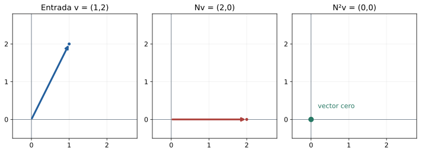
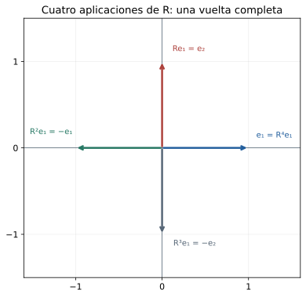
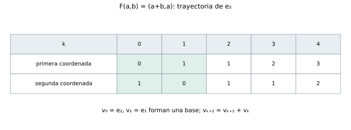

Capítulo 15. Polinomios de operadores y teorema de Cayley–Hamilton
Álgebra para matemáticos · Tomo II
← Capítulo 14 · Índice del tomo II · Obra completa · Capítulo 16 →
La transformación \(T(x,y)=(3x+y,x+3y)\) de C14 tiene matriz \(A=\begin{pmatrix}3&1\\1&3\end{pmatrix}\). Para aplicarla cien veces podríamos empezar a multiplicar matrices, aunque las primeras cuentas ya muestran una manera de abreviar el trabajo: \(A^2=\begin{pmatrix}10&6\\6&10\end{pmatrix}=6A-8I\). Multiplicar esta identidad por \(A\) da \(A^3=6A^2-8A=28A-48I\). Cada nueva potencia puede reducirse a una combinación de las dos matrices iniciales. El exponente crece; el espacio en que hacemos las cuentas sigue teniendo dimensión dos.
La relación se escribe \(A^2-6A+8I=0\). El polinomio \(t^2-6t+8\) es justamente el característico calculado en C14. Hay dos cuestiones distintas en esa coincidencia: justificar por qué el característico siempre produce una relación entre las potencias y determinar si puede haber una relación de grado menor. Para \(3I_2\), por ejemplo, el característico es \((t-3)^2\), pero la igualdad \(3I_2-3I_2=0\) ya corresponde al polinomio \(t-3\). El tamaño de una matriz fija el grado del característico; las relaciones entre sus potencias pueden comenzar antes.
Trabajaremos sobre un cuerpo conmutativo \(\mathbb F\), con operadores \(T:V\to V\) y composición como producto. Declararemos cuándo la dimensión debe ser finita y positiva. Recuperamos de C12 la representación de composiciones, de C13 los determinantes y la adjugata, y de C14 el característico \(\chi_T(t)=\det(tI-A)\). La letra \(t\) denota una indeterminada. Los argumentos de división y Bézout se desarrollan aquí sobre \(\mathbb F\) para que también puedan usarse en característica positiva.
15.1. Evaluar un polinomio en una transformación
Para \(p(t)=a_0+a_1t+\cdots+a_dt^d\), la expresión \(p(T)\) debe enviar un vector \(v\) a \(a_0v+a_1T(v)+\cdots+a_dT^d(v)\). Cada sumando vive en el mismo espacio, y la suma define un operador lineal. El término constante actúa multiplicando la entrada: el operador que le corresponde es \(a_0I_V\). Escribir \(T^2-6T+8\) omitiría ese tipo de objeto; la escritura completa es \(T^2-6T+8I_V\).
Definición 15.1. Para un polinomio \(p(t)=\sum_{j=0}^d a_jt^j\), se define su evaluación en \(T\) por \(p(T)=\sum_{j=0}^d a_jT^j\), donde \(T^0=I_V\). El polinomio cero se evalúa en el operador cero. Se dice que \(p\) anula a \(T\) cuando \(p(T)=0\) como operador, es decir, cuando \(p(T)v=0\) para todo \(v\in V\). Para una matriz cuadrada se usa la misma definición, con \(A^0=I\).
La condición universal importa incluso en un plano. Sea \(N(x,y)=(y,0)\). Se tiene \(N(e_1)=0\), pero \(N(e_2)=e_1\ne0\); el polinomio \(t\) anula al primer vector al evaluarse en \(N\), sin anular al operador. En cambio, \(N^2=0\), porque la primera aplicación deja toda entrada sobre el eje horizontal y la segunda la envía a cero. La identidad se verifica sobre cualquier \((x,y)\), o sobre los dos vectores de una base, usando linealidad.

Proposición 15.1 (reglas de evaluación). Para \(p,q\in\mathbb F[t]\) y \(c\in\mathbb F\),
\[ (p+q)(T)=p(T)+q(T),\qquad (cp)(T)=cp(T),\qquad (pq)(T)=p(T)q(T),\qquad 1(T)=I_V. \]
En particular, dos polinomios del mismo operador conmutan. Si \(S\) conmuta con \(T\), entonces \(S\) conmuta con cada \(p(T)\).
Demostración. Las reglas para suma y múltiplo escalar resultan agrupando los coeficientes de cada potencia. Si \(p=\sum_i a_it^i\) y \(q=\sum_j b_jt^j\), la distributividad de la composición y \(T^iT^j=T^{i+j}\) dan
\[ p(T)q(T)=\sum_{i,j}a_ib_jT^{i+j}=(pq)(T). \]
El producto \(pq\) es igual a \(qp\), así que las dos evaluaciones conmutan. Para la última afirmación, una inducción a partir de \(ST=TS\) da \(ST^j=T^jS\) para cada \(j\ge0\); distribuir \(S\) sobre la combinación lineal prueba \(Sp(T)=p(T)S\). \(\square\)
El argumento funciona porque todas las potencias proceden de un mismo operador. No autoriza a desarrollar \((S+T)^2\) como \(S^2+2ST+T^2\) si \(ST\ne TS\): en general aparecen los dos términos \(ST\) y \(TS\). Más adelante tendremos que distinguir también la evaluación de polinomios con coeficientes escalares de una pretendida sustitución en expresiones cuyos coeficientes sean matrices arbitrarias.
Las reglas permiten evaluar productos factorizados. Para la matriz inicial, \(p(t)=(t-4)(t-2)\) produce \(p(A)=(A-4I)(A-2I)\). En la base propia de C14, cada factor anula una de las dos direcciones, y el producto anula ambas. Podemos comprobarlo sin cambiar de base: el producto desarrollado es \(A^2-6A+8I=0\). En cada interpretación, la igualdad sigue siendo una afirmación sobre el operador entero.
Proposición 15.2 (coordenadas y vectores propios). Si \(A=[T]_{\mathcal B}\), entonces \([p(T)]_{\mathcal B}=p(A)\). Si \(B=P^{-1}AP\), se tiene \(p(B)=P^{-1}p(A)P\). Si \(T(v)=\lambda v\) con \(v\ne0\), entonces \(p(T)v=p(\lambda)v\).
Demostración. C12 da \([T^j]_{\mathcal B}=A^j\), incluido \(j=0\), y respeta combinaciones lineales; sumarlas prueba la primera igualdad. Para la segunda, \(B^j=P^{-1}A^jP\) por cancelación de los factores consecutivos \(PP^{-1}\), mientras \(I=P^{-1}IP\) trata el término constante. La tercera usa \(T^jv=\lambda^jv\) de C14 y la misma suma. \(\square\)
La tercera igualdad detecta una condición necesaria para anular un operador: todo valor propio debe ser raíz de cualquier polinomio que lo anule. La condición no es suficiente. Para \(B=\begin{pmatrix}3&1\\0&3\end{pmatrix}\) el único valor propio es tres, pero \(B-3I\ne0\). El polinomio \(t-3\) se anula en ese valor y en todos sus vectores propios, mientras deja una acción no nula sobre \(e_2\). Para anular \(B\) hace falta, al menos, recuperar la relación \((B-3I)^2=0\).
15.2. La primera relación entre las potencias
Supongamos \(\dim V=n\ge1\). En una base, los operadores se representan mediante matrices de orden \(n\), cuyo espacio tiene dimensión \(n^2\): las matrices con una sola entrada uno y las demás cero forman una base. Por consiguiente, la lista \(I,T,T^2,\ldots,T^{n^2}\) es dependiente. Una relación no trivial entre sus términos proporciona un polinomio no nulo que anula a \(T\). Dividir sus coeficientes por el principal permite hacerlo mónico. Esta primera cota de grado garantiza existencia sin usar el teorema de Cayley–Hamilton que queremos demostrar.
Definición 15.2. El polinomio mínimo de un operador en dimensión finita es el polinomio mónico de menor grado que lo anula; se denota \(m_T(t)\). Su unicidad se probará enseguida. Para el espacio cero adoptamos \(m_T=1\): allí \(I_V=0\) y el polinomio constante uno ya anula al único operador. Si \(V\ne\{0\}\), ningún polinomio constante no nulo lo anula, porque \(cI_V(v)=cv\ne0\) para \(c\ne0\) y \(v\ne0\). Así, en dimensión positiva \(\deg m_T\ge1\).
Necesitamos la división polinómica sobre el cuerpo elegido. Si \(f,g\in\mathbb F[t]\) y \(g\ne0\), se puede restar a \(f\) un múltiplo monomial de \(g\) que elimine su término principal: si sus términos principales son \(at^r\) y \(bt^s\), con \(r\ge s\), se resta \((a/b)t^{r-s}g\). El resto parcial tiene menor grado. Repetir termina, porque los grados no negativos descienden, y produce \(f=qg+r\), donde \(r=0\) o \(\deg r<\deg g\). Para la unicidad, dos divisiones darían \((q-q')g=r'-r\). Si \(q\ne q'\), el miembro izquierdo tiene grado al menos \(\deg g\), y el derecho es cero o tiene grado menor. La contradicción obliga a \(q=q'\) y \(r=r'\). La posibilidad de dividir por \(b\) es el punto en que se usa que los coeficientes forman un cuerpo.
Teorema 15.3 (todos los polinomios anuladores). Para un operador en dimensión finita,
\[ p(T)=0\quad\Longleftrightarrow\quad m_T\mid p. \]
El polinomio mínimo es único. Dos polinomios dan el mismo operador al evaluarse si y sólo si su diferencia es múltiplo de \(m_T\).
Demostración. Sea \(m\) un polinomio mónico de menor grado que anule a \(T\). Dividimos \(p=qm+r\) con \(r=0\) o \(\deg r<\deg m\). Si \(p(T)=0\), las reglas de evaluación dan \(r(T)=0\). Un resto no nulo podría normalizarse dividiendo por su coeficiente principal, y produciría un polinomio mónico anulador de grado menor que \(m\). Por la elección de \(m\), eso es imposible; luego \(r=0\) y \(m\mid p\). Recíprocamente, si \(p=qm\), entonces \(p(T)=q(T)m(T)=0\).
Si \(m'\) fuera otro mínimo mónico, \(m\mid m'\) y ambos tienen el mismo grado; difieren por un escalar. Como ambos son mónicos, ese escalar es uno. Finalmente, \(p(T)=q(T)\) equivale a \((p-q)(T)=0\), de modo que la primera parte se aplica a su diferencia. En el espacio cero, \(m=1\) divide a todos los polinomios y todas las evaluaciones son el operador cero, de acuerdo con el enunciado. \(\square\)
El adjetivo mínimo se refiere al grado, y la normalización mónica elimina la ambigüedad por escalares. No se refiere al número de términos ni al tamaño de los coeficientes. Para una matriz no escalar de orden dos que satisface una relación mónica cuadrática, esa relación ya es su mínimo: un mínimo lineal \(t-c\) obligaría a que la matriz fuera \(cI\).
Podemos buscar \(m_A\) con sistemas lineales, sin factorizar el característico. Para \(d=1,2,\ldots\), se pregunta si existen \(a_0,\ldots,a_{d-1}\) tales que \(a_0I+\cdots+a_{d-1}A^{d-1}=-A^d\). Cada entrada da una ecuación escalar. El primer sistema compatible entrega el mínimo, pues un anulador de menor grado habría dado una relación en un paso anterior. Para \(A=\begin{pmatrix}3&1\\1&3\end{pmatrix}\) no hay relación de grado uno, y el paso dos entrega \(m_A=t^2-6t+8\).
Proposición 15.4 (raíces del mínimo). En dimensión finita, un escalar \(\lambda\in\mathbb F\) es valor propio de \(T\) si y sólo si \(m_T(\lambda)=0\). En consecuencia, \(m_T\) y \(\chi_T\) tienen las mismas raíces en el cuerpo de trabajo, aunque sus multiplicidades pueden ser distintas.
Demostración. Si \(v\ne0\) y \(T(v)=\lambda v\), la proposición 15.2 da \(0=m_T(T)v=m_T(\lambda)v\); el escalar debe ser cero. Recíprocamente, si \(m_T(\lambda)=0\), el teorema del factor da \(m_T(t)=(t-\lambda)q(t)\), con \(q\) de grado menor. La minimalidad obliga a \(q(T)\ne0\), así que existe \(w\) con \(u=q(T)w\ne0\). Evaluar la factorización da \((T-\lambda I)u=0\); por tanto, \(u\) es un vector propio. C14 identifica las raíces de \(\chi_T\) con esos mismos valores. El espacio cero no aporta raíces ni vectores propios y satisface también la afirmación. \(\square\)
Para una rotación real de un cuarto de vuelta, \(R^2=-I\) y \(R\) no es escalar, por lo que \(m_R=t^2+1\). El mínimo no tiene raíces reales, pero sigue describiendo una relación entre operadores. Pasar a los complejos factoriza el mismo polinomio como \((t-i)(t+i)\). Su cálculo no ha requerido encontrar los vectores propios ni suponer que el polinomio se descomponga en el cuerpo inicial.
15.3. Una identidad para todas las matrices
En orden dos, el característico es \(t^2-(\operatorname{tr}A)t+\det A\). Cayley–Hamilton afirma que \(A^2-(\operatorname{tr}A)A+(\det A)I=0\). Comprobar las cuatro entradas para \(A=\begin{pmatrix}a&b\\c&d\end{pmatrix}\) permite ver las cancelaciones sin buscar raíces; la dificultad general consiste en organizar esas cancelaciones para cualquier orden.
La adjugata de C13 ofrece una identidad previa: \((tI-A)\operatorname{adj}(tI-A)=\chi_A(t)I\). Sus entradas son polinomios escalares y la igualdad se obtiene por cofactores, con los argumentos de sumas y productos ya precisados en C14. La tentación es escribir inmediatamente \(t=A\). Esa sustitución requiere cuidado: la expresión es una matriz de polinomios, no un único polinomio con coeficientes escalares. Después de agrupar sus potencias de \(t\), los coeficientes son matrices, y una regla de evaluación no se vuelve multiplicativa para coeficientes arbitrarios. Podemos evitar ese obstáculo comparando los coeficientes antes de formar las potencias de \(A\).
Teorema 15.5 (Cayley–Hamilton). Para todo operador de un espacio de dimensión finita,
\[ \chi_T(T)=0. \]
En particular, \(m_T\mid\chi_T\) y \(\deg m_T\le\dim V\). En dimensión positiva, \(1\le\deg m_T\le\dim V\).
Demostración. Elegimos una base y escribimos \(A=[T]\). Supongamos primero que su orden es \(n\ge1\). Cada cofactor de \(tI-A\) es un determinante de orden \(n-1\), por lo que tiene grado a lo sumo \(n-1\). Existen matrices constantes \(C_0,\ldots,C_{n-1}\) tales que
\[ B(t)=\operatorname{adj}(tI-A)=\sum_{j=0}^{n-1}t^jC_j. \]
Para \(n=1\) el cofactor es el determinante vacío, igual a uno, así que la misma escritura es válida. Escribimos \(\chi_A(t)=\sum_{k=0}^{n}c_kt^k\), con \(c_n=1\). La identidad \((tI-A)B(t)=\chi_A(t)I\), al comparar coeficientes, da
\[ C_{k-1}-AC_k=c_kI\qquad(0\le k\le n), \]
donde ponemos \(C_{-1}=0\) y \(C_n=0\). Las ecuaciones de los extremos dicen \(-AC_0=c_0I\) y \(C_{n-1}=I\). Multiplicamos la ecuación de índice \(k\) por \(A^k\) a la izquierda y sumamos:
\[ \sum_{k=0}^{n}c_kA^k =\sum_{k=0}^{n}A^kC_{k-1}-\sum_{k=0}^{n}A^{k+1}C_k=0. \]
La primera suma empieza efectivamente en \(k=1\), y la segunda termina en \(k=n-1\); cambiar \(j=k-1\) en la primera las hace idénticas. No se intercambió el orden de ninguna matriz. El miembro izquierdo es \(\chi_A(A)\), que por 15.2 representa a \(\chi_T(T)\). Así queda probado que este operador es cero.
En dimensión cero, \(\chi_T=1\) y \(1(T)=I_V=0\), por lo que el enunciado también se cumple. El teorema 15.3 aplicado al anulador \(\chi_T\) da la divisibilidad. Como \(\chi_T\) es mónico de grado \(n\), se obtiene la cota. \(\square\)
La prueba conserva su forma en característica dos y no exige raíces en el cuerpo. También muestra qué debía justificarse detrás de la frase «sustituir la matriz en su característico»: las cancelaciones se producen entre coeficientes matriciales en un orden concreto. Evaluar el determinante como si sus entradas permanecieran escalares después de esa sustitución confundiría objetos de tamaños diferentes.
Si \(\chi_T=\prod_i(t-\lambda_i)^{a_i}\) se descompone en el cuerpo de trabajo, la divisibilidad y 15.4 dan \(m_T=\prod_i(t-\lambda_i)^{r_i}\) con \(1\le r_i\le a_i\). Ningún factor lineal puede desaparecer del mínimo, pero su exponente puede bajar. En la matriz \(\operatorname{diag}(3,3,-1)\) el mínimo es \((t-3)(t+1)\); en \(\begin{pmatrix}3&1&0\\0&3&0\\0&0&-1\end{pmatrix}\) es \((t-3)^2(t+1)\), porque el producto de los dos factores simples deja una entrada superior no nula. Son las dos maneras de actuar sobre la componente repetida que C14 había empezado a distinguir.
15.4. Calcular con restos
Sea \(d=\deg m_T\ge1\). Dividir \(p=qm_T+r\), con \(\deg r<d\) o \(r=0\), da \(p(T)=r(T)\). Podemos reemplazar cualquier potencia elevada por el resto de la división de \(t^k\) entre \(m_T\). La igualdad se conserva para sumas y productos: después de multiplicar dos restos, se vuelve a reducir. Esta descripción explica por qué el problema inicial nunca exigió abandonar las combinaciones de \(I\) y \(A\).
Corolario 15.6 (dimensión de los polinomios de \(T\)). Denotemos por \(\mathbb F[T]\) el conjunto de todos los operadores \(p(T)\). Si \(V\ne\{0\}\), la lista \(I,T,\ldots,T^{d-1}\), con \(d=\deg m_T\), es una base de ese espacio, de dimensión \(d\). Cada operador de \(\mathbb F[T]\) tiene un único representante polinómico de grado menor que \(d\), admitiendo el polinomio cero.
Demostración. Los restos de división prueban que la lista genera. Una relación no trivial entre sus términos daría un polinomio anulador no nulo de grado menor que \(d\), contradiciendo la definición del mínimo. Por tanto, la lista es independiente. Si dos restos representaran el mismo operador, su diferencia sería un anulador de grado menor que \(d\) y tendría que ser cero. \(\square\)
En dimensión cero, \(\mathbb F[T]=\{0\}\) tiene base vacía y dimensión cero, igual al grado de \(m_T=1\); el resto de cualquier división por uno es cero. La evaluación respeta sumas, productos e identidad por 15.1, de modo que \(\mathbb F[T]\) tiene además una multiplicación conmutativa heredada de los operadores. No hace falta desarrollar una teoría de anillos cociente para realizar estas cuentas: dos polinomios representan el mismo operador cuando difieren por un múltiplo del mínimo.
Para la matriz inicial sobre \(\mathbb R\), \(m_A=(t-4)(t-2)\). El resto de \(t^k\) tiene forma \(\alpha_kt+\beta_k\) y debe tomar los valores \(4^k\) y \(2^k\) en cuatro y dos. Resolver \(4\alpha_k+\beta_k=4^k\), \(2\alpha_k+\beta_k=2^k\) da
\[ A^k=\frac{4^k-2^k}{2}\,A+(2^{k+1}-4^k)I\qquad(k\ge0). \]
La interpolación encuentra el resto porque los dos nodos son distintos: un polinomio de grado menor que dos queda determinado por sus valores en ellos. No se puede trasladar ese paso sin cambios a un mínimo con raíz doble. Si \(N^2=0\) y \(N\ne0\), el mínimo es \(t^2\); el valor de \(\alpha t+\beta\) en cero sólo informa de \(\beta\) y no determina \(\alpha\). La división polinómica sigue funcionando en ambos casos.
Para \(R=\begin{pmatrix}0&-1\\1&0\end{pmatrix}\), la reducción es aún más corta: \(R^2=-I\) implica \(R^3=-R\), \(R^4=I\), y las potencias se repiten con período cuatro sobre \(\mathbb R\). Así, \(R^{2026}=-I\) porque \(2026=4\cdot506+2\). El resto de \(t^{2026}\) módulo \(t^2+1\) es \(-1\), y esa cuenta evita cualquier matriz intermedia.

También podemos trabajar sin raíces del mínimo. Para \(F=\begin{pmatrix}1&1\\1&0\end{pmatrix}\) se cumple \(F^2=F+I\). Si definimos los números \(f_0=0\), \(f_1=1\) y \(f_{k+1}=f_k+f_{k-1}\) para \(k\ge1\), una inducción da \(F^k=f_kF+f_{k-1}I\) para \(k\ge1\): al multiplicar por \(F\) aparecen \(f_k(F+I)+f_{k-1}F=f_{k+1}F+f_kI\). La relación cuadrática entre matrices produce la misma recurrencia que organiza los coeficientes. Por ejemplo, \(F^{10}=55F+34I\).
15.5. Bézout e inversas polinómicas
Una relación anuladora cuyo término constante no sea cero permite despejar la identidad. Si \(m_T(t)=t^d+a_{d-1}t^{d-1}+\cdots+a_1t+a_0\) y \(a_0\ne0\), entonces
\[ T\bigl(T^{d-1}+a_{d-1}T^{d-2}+\cdots+a_1I\bigr)=-a_0I. \]
El factor entre paréntesis conmuta con \(T\), por lo que dividirlo por \(-a_0\) proporciona una inversa por ambos lados. Si \(a_0=0\), 15.4 dice que cero es valor propio y \(T\) no es invertible. La fórmula abarca todos los operadores invertibles de dimensión finita positiva:
\[ T^{-1}=-a_0^{-1}\bigl(T^{d-1}+a_{d-1}T^{d-2}+\cdots+a_1I\bigr). \]
Para \(d=1\), el paréntesis es simplemente \(I\). En la matriz inicial, \(a_0=8\) y la fórmula entrega \(A^{-1}=(6I-A)/8\), resultado verificable multiplicando por \(A\) y usando \(A^2=6A-8I\). Una fórmula semejante para \(p(T)^{-1}\) exige resolver una cuestión polinómica más general: encontrar \(u\) tal que \(up\) difiera de uno por un múltiplo de \(m_T\).
Lema 15.7 (Bézout polinómico). Si \(f,g\in\mathbb F[t]\) no son ambos cero, existe un único divisor común mónico \(h\) que es múltiplo de cualquier otro divisor común. Además, existen \(u,v\in\mathbb F[t]\) tales que \(h=uf+vg\). Se llama máximo común divisor de \(f,g\) y se escribe \(\gcd(f,g)\). En particular, son coprimos, es decir, \(\gcd(f,g)=1\), si y sólo si alguna combinación \(uf+vg\) es uno.
Demostración. Entre las combinaciones no nulas \(af+bg\) elegimos una de menor grado y la hacemos mónica, multiplicando ambos coeficientes por un escalar. La llamamos \(h=uf+vg\). Dividimos \(f=qh+r\). El resto es otra combinación de \(f\) y \(g\), pues \(r=(1-qu)f-qvg\); si fuera no nulo tendría grado menor que \(h\), contradiciendo su elección. Por tanto, \(h\mid f\), y dividir \(g\) de la misma manera prueba \(h\mid g\). Cualquier divisor común divide cada combinación y, en particular, divide a \(h\).
Si \(h'\) cumpliera esas propiedades y fuera mónico, cada uno dividiría al otro; el grado y el coeficiente principal fuerzan \(h=h'\). Cuando una combinación es uno, ningún divisor común puede tener grado positivo; el divisor común mónico es uno. La implicación recíproca es la identidad que acabamos de construir. \(\square\)
La demostración garantiza la identidad; las divisiones sucesivas permiten calcularla. Se divide \(f\) entre \(g\), después \(g\) entre el resto y se continúa mientras el resto no sea cero. Cada división conserva los divisores comunes del par; el último resto no nulo, normalizado, es el máximo común divisor. Sustituir hacia atrás expresa ese resto como combinación del par inicial. Los grados descienden y el proceso termina sobre cualquier cuerpo.
Teorema 15.8 (invertir una evaluación). Si \(\dim V\) es finita y positiva, entonces
\[ p(T)\text{ es invertible}\quad\Longleftrightarrow\quad\gcd(p,m_T)=1. \]
Cuando \(up+vm_T=1\), su inversa es \(u(T)\); el representante de esa inversa de grado menor que \(\deg m_T\) es único.
Demostración. Evaluar una identidad de Bézout da \(u(T)p(T)=I\). Como los polinomios de \(T\) conmutan, también \(p(T)u(T)=I\), y \(u(T)\) es la inversa.
Para la otra dirección, supongamos que \(h=\gcd(p,m_T)\) tiene grado positivo. Escribimos \(p=hk\) y \(m_T=hq\). El grado de \(q\) es menor que el de \(m_T\), y \(q\) es no nulo, por lo que \(q(T)\ne0\). Sin embargo,
\[ p(T)q(T)=k(T)h(T)q(T)=k(T)m_T(T)=0. \]
Si \(p(T)\) fuese invertible, multiplicar por su inversa obligaría a \(q(T)=0\), contradicción. Por tanto, invertibilidad implica que el máximo común divisor sea uno. La unicidad del resto representativo procede de 15.6. \(\square\)
Para la rotación real y \(p(t)=t+1\), la identidad \(\tfrac12(1-t)(t+1)+\tfrac12(t^2+1)=1\) da \((R+I)^{-1}=(I-R)/2\). Para \(p(t)=t^2+1\), en cambio, el máximo común divisor con \(m_R\) es \(t^2+1\) y la evaluación es cero. El criterio funciona aunque el mínimo no tenga raíces en el cuerpo. En característica dos, la primera identidad no está disponible: al reducir la misma matriz se tiene \(m_R=(t+1)^2\), y \(R+I\) es singular. El denominador dos advertía una diferencia real en el problema, no un inconveniente de escritura.
15.6. Lo que una entrada permite reconstruir
Una relación \(p(T)v=0\) puede contener menos información que \(p(T)=0\). Para \(A=\operatorname{diag}(2,3)\) y \(v=e_1\), el polinomio \(t-2\) anula a esa entrada y no ve la segunda coordenada. La diferencia desaparece si las imágenes sucesivas de \(v\) alcanzan a generar todo el espacio.
Proposición 15.9 (comprobar una relación). Un polinomio \(p\) anula a \(T\) si y sólo si \(p(T)\) anula a cada vector de una base. Si \(v,Tv,\ldots,T^{n-1}v\) es una base de un espacio de dimensión \(n\ge1\), entonces basta comprobar \(p(T)v=0\). En ese caso, \(m_T=\chi_T\).
Demostración. Un operador lineal que es cero sobre una base es cero sobre toda combinación de sus elementos; la implicación recíproca es inmediata. Para la segunda afirmación, si \(p(T)v=0\), la conmutación da \(p(T)T^jv=T^jp(T)v=0\) para cada vector de la base indicada. Por la primera parte, \(p(T)=0\).
Ningún polinomio no nulo de grado menor que \(n\) puede anular a \(v\): lo haría mediante una relación no trivial entre los primeros \(n\) vectores de esa base. Así, \(\deg m_T\ge n\). Cayley–Hamilton da \(\deg m_T\le n\) y \(m_T\mid\chi_T\); al ser ambos mónicos de grado \(n\), son iguales. \(\square\)
Para \(F=\begin{pmatrix}1&1\\1&0\end{pmatrix}\), los vectores \(e_2\) y \(Fe_2=e_1\) forman una base. La relación \(F^2e_2=Fe_2+e_2\) ya determina \(F^2-F-I=0\) en todo el espacio por 15.9. Una trayectoria y su relación de recurrencia han bastado, porque sus dos entradas iniciales constituyen una base. Para \(3I_2\), cualquier trayectoria de un vector no nulo permanece en una sola recta; allí la igualdad \(m_T=\chi_T\) falla y la hipótesis de generación identifica la información que falta.

La operación de reducir potencias a restos vuelve así al problema inicial con un criterio de verificación. Una cuenta sobre un vector produce una relación local; una cuenta sobre una base la convierte en identidad de operadores. Cuando una sola trayectoria contiene esa base, la recurrencia que describe su evolución ya recoge el polinomio mínimo completo.
15.7. Ejercicios
Los cálculos numéricos se realizan sobre \(\mathbb R\) salvo indicación contraria. Los operadores generales actúan en dimensión finita positiva sobre \(\mathbb F\), excepto cuando el enunciado declare otro espacio. Las identidades que se pidan deben comprobarse como identidades de operadores; una prueba sobre vectores de una base es suficiente, mientras que una sola entrada requiere una hipótesis adicional.
Ejercicio 1 — Evaluar con el término constante. Para \(A=\begin{pmatrix}3&1\\1&3\end{pmatrix}\) y \(p(t)=t^2-2t+1\), calcula \(p(A)\) y verifica su acción sobre \((1,-1)\).
Ejercicio 2 — Reducir una potencia. Para la matriz del ejercicio 1, calcula \(A^5\) como combinación de \(A\) e \(I\) y escribe sus entradas.
Ejercicio 3 — Una potencia de una rotación. Para \(R=\begin{pmatrix}0&-1\\1&0\end{pmatrix}\), encuentra su mínimo y calcula \(R^{2026}+R^{2027}\).
Ejercicio 4 — Una transformación que se anula al repetirla. Sea \(N(x,y)=(y,0)\). Determina \(\chi_N\), \(m_N\) y el resto representativo de \(p(N)\) para \(p(t)=t^7+3t^2-5t+4\).
Ejercicio 5 — Una raíz repetida en el mínimo. Para \(B=\begin{pmatrix}3&1\\0&3\end{pmatrix}\), encuentra \(m_B\) y una fórmula para \(B^k\), \(k\ge0\).
Ejercicio 6 — Repeticiones diagonales. Para \(A=\operatorname{diag}(2,2,5)\), determina el característico, el mínimo y la dimensión de \(\mathbb R[A]\).
Ejercicio 7 — Constantes y dimensión cero. Encuentra los mínimos del operador cero y de la identidad en dimensión positiva. Repite la pregunta en el espacio cero.
Ejercicio 8 — Reconocer una evaluación mal escrita. Para \(A=\begin{pmatrix}1&2\\0&1\end{pmatrix}\), alguien interpreta \(p(t)=t^2+2\) como \(A^2+\begin{pmatrix}2&2\\2&2\end{pmatrix}\). Corrige la cuenta y explica qué acción tiene el término constante.
Ejercicio 9 — Conservar una identidad al cambiar de base. Sea \(A=\operatorname{diag}(2,3)\) y \(P=\begin{pmatrix}1&1\\0&1\end{pmatrix}\). Calcula \(B=P^{-1}AP\) y comprueba que \((B-2I)(B-3I)=0\). ¿Por qué \(m_A=m_B\)?
Ejercicio 10 — La recurrencia de Fibonacci. Para \(F=\begin{pmatrix}1&1\\1&0\end{pmatrix}\), determina \(m_F\) y calcula \(F^{10}\) mediante la recurrencia del capítulo.
Ejercicio 11 — Raíces que no bastan. Da una matriz \(A\) y un polinomio \(p\) que se anule en todos los valores propios de \(A\) pero satisfaga \(p(A)\ne0\). Explica qué inferencia falla.
Ejercicio 12 — Un característico, dos mínimos. Construye dos matrices reales de orden dos con el mismo característico y distintos mínimos.
Ejercicio 13 — Un mínimo, dos característicos. Construye dos matrices reales del mismo orden con el mismo mínimo y distintos característicos.
Ejercicio 14 — Dos invariantes que aún no clasifican. En dimensión cuatro, construye \(N_1,N_2\) con \(\chi_{N_1}=\chi_{N_2}\) y \(m_{N_1}=m_{N_2}\) que no sean semejantes. Puedes imponer \(N_i^2=0\) y usar el rango.
Ejercicio 15 — Una entrada insuficiente. Para \(A=\operatorname{diag}(2,3)\) y \(v=e_1\), encuentra un polinomio mónico de menor grado que satisfaga \(p(A)v=0\). Compáralo con \(m_A\).
Ejercicio 16 — Una trayectoria que sí determina el mínimo. Sea \(C=\begin{pmatrix}0&0&2\\1&0&0\\0&1&0\end{pmatrix}\). Usa la trayectoria de \(e_1\) para encontrar \(m_C\), \(\chi_C\) y \(C^{2026}\).
Ejercicio 17 — Derivar polinomios reales. Para la derivación formal \(D\) en \(P_3(\mathbb R)\), calcula \(m_D\), \(\chi_D\) y la dimensión de \(\mathbb R[D]\).
Ejercicio 18 — Derivar en característica dos. Repite el ejercicio 17 en \(P_3(\mathbb F_2)\). ¿Cambian el mínimo y el característico?
Ejercicio 19 — El mínimo y la transposición. Demuestra que \(A\) y \(A^{\mathsf T}\) tienen el mismo polinomio mínimo sobre cualquier cuerpo.
Ejercicio 20 — La primera dependencia de matrices. Explica por qué el primer grado \(d\) para el que \(A^d\) pertenece a \(\operatorname{span}(I,A,\ldots,A^{d-1})\) entrega el mínimo. ¿Puedes sustituir esas matrices por \(v,Av,\ldots\) para cualquier \(v\ne0\)?
Ejercicio 21 — El obstáculo de los coeficientes matriciales. Sea \(A=\begin{pmatrix}0&1\\0&0\end{pmatrix}\) y \(B=\begin{pmatrix}0&0\\1&0\end{pmatrix}\). Para matrices de polinomios define \(E_A(\sum_j C_jt^j)=\sum_j C_jA^j\). Compara \(E_A((tI)B)\) con \(E_A(tI)E_A(B)\) y explica la cautela en la prueba de Cayley–Hamilton.
Ejercicio 22 — La prueba de orden dos. Para \(A=\begin{pmatrix}a&b\\c&d\end{pmatrix}\), escribe \(\operatorname{adj}(tI-A)\), identifica \(C_0,C_1\) y reconstruye la cancelación de 15.5.
Ejercicio 23 — Una inversa de grado uno. Para \(A=\begin{pmatrix}2&1\\0&3\end{pmatrix}\), calcula su inversa como polinomio en \(A\) y verifícala sin eliminación.
Ejercicio 24 — Una inversa que depende del cuerpo. Para la rotación \(R\) del ejercicio 3, calcula \((I+R)^{-1}\) sobre \(\mathbb R\) mediante Bézout. Decide si la matriz reducida \(I+R\) es invertible sobre \(\mathbb F_2\).
Ejercicio 25 — Desplazar antes de invertir. Sea \(a\in\mathbb F\) y escribe \(m_T(t)=(t-a)q(t)+m_T(a)\). Si \(m_T(a)\ne0\), encuentra \((T-aI)^{-1}\). Explica qué pasa si \(m_T(a)=0\).
Ejercicio 26 — Bézout sin factorizar raíces. Para \(F=\begin{pmatrix}1&1\\1&0\end{pmatrix}\), encuentra \((F+I)^{-1}\) mediante una identidad entre \(t+1\) y \(t^2-t-1\).
Ejercicio 27 — Un factor común impide invertir. Para \(A=\operatorname{diag}(2,3)\) y \(p=t^2-4\), decide si \(p(A)\) es invertible. Exhibe el vector que detecta el problema y contrasta con el criterio de Bézout.
Ejercicio 28 — Una serie geométrica finita. Supón \(N^r=0\) con \(r\ge1\). Demuestra que \(I-N\) es invertible y da una inversa que valga sobre cualquier cuerpo, incluso en dimensión infinita.
Ejercicio 29 — Una potencia que borra información. Sea \(N\ne0\) con \(N^2=0\) y \(U=I+N\). Calcula \(U^k\) para \(k\ge1\) y determina su mínimo según que el escalar \(k\cdot1_{\mathbb F}\) sea cero o no.
Ejercicio 30 — Polinomio formal y función. En \(\mathbb F_q\), con \(q\) primo, el polinomio \(p(t)=t^q-t\) vale cero en cada escalar del cuerpo. ¿Se sigue que \(p(A)=0\) para toda matriz cuadrada sobre ese cuerpo?
Ejercicio 31 — Ampliar un cuerpo sin cambiar el mínimo. Sea \(\mathbb F\subseteq\mathbb K\) una extensión de cuerpos y \(A\) una matriz con entradas en \(\mathbb F\). Demuestra que su mínimo calculado sobre \(\mathbb K\) es el mismo polinomio que sobre \(\mathbb F\). Puedes usar eliminación.
Ejercicio 32 — Mismo mínimo, distinto espectro. Usa la rotación de un cuarto de vuelta para mostrar que una ampliación de cuerpo puede cambiar el espectro aunque conserve el mínimo.
Ejercicio 33 — El criterio de raíces para una inversa. Sobre un espacio complejo de dimensión finita positiva, demuestra que \(p(T)\) es invertible si y sólo si \(p(\lambda)\ne0\) para todo valor propio \(\lambda\) de \(T\). Explicita el uso del TFA.
Ejercicio 34 — Conmutar no obliga a ser un polinomio. Demuestra que todo \(p(T)\) conmuta con \(T\). Da un ejemplo en que un operador \(S\) conmute con \(T\) pero no sea un polinomio de \(T\).
Ejercicio 35 — Componer polinomios. Prueba que \(p(q(T))=(p\circ q)(T)\). Si \(m_T\) divide a \(h(q(t))\), ¿qué puedes afirmar sobre el mínimo de \(q(T)\)? Aplica la idea a \(R^2=-I\).
Ejercicio 36 — Sumar dos operadores que se anulan al repetirlos. Supón \(S^r=0\), \(T^s=0\) y \(ST=TS\), con \(r,s\ge1\). Prueba \((S+T)^{r+s-1}=0\). Muestra que la conmutación no puede suprimirse.
Ejercicio 37 — Evaluar en un operador de rango uno. Sean \(n\ge2\), \(u,v\in\mathbb F^n\) no nulos y \(T(x)=(v^{\mathsf T}x)u\). Con \(c=v^{\mathsf T}u\), determina \(m_T\) y una fórmula para \(p(T)\) en los casos \(c\ne0\) y \(c=0\).
Ejercicio 38 — Certificar una pareja imposible de anuladores. ¿Puede un operador en dimensión positiva satisfacer simultáneamente \(f(T)=0\) y \(g(T)=0\) si \(f,g\) son coprimos? Si \(f(T)v=g(T)v=0\), ¿qué puede decirse de \(v\)?
Ejercicio 39 — Los valores propios de una evaluación. Para \(T\) complejo de dimensión finita positiva, demuestra \(\operatorname{spec}(p(T))=\{p(\lambda):\lambda\in\operatorname{spec}(T)\}\). Trata el caso constante y explica por qué la igualdad puede fallar sobre \(\mathbb R\).
Ejercicio 40 — Un parámetro cambia la relación mínima. Para \(A_s=\begin{pmatrix}2&s&0\\0&2&0\\0&0&s\end{pmatrix}\) y \(s\in\mathbb R\), determina \(m_{A_s}\) en todos los casos. Para \(s\ne0\), encuentra una fórmula polinómica para \(A_s^{-1}\) que funcione en todos esos casos, aunque su grado no sea siempre el menor posible.
15.8. Soluciones
Solución 1. Como \(A^2=6A-8I\), se obtiene \(p(A)=4A-7I=\begin{pmatrix}5&4\\4&5\end{pmatrix}\). Su producto por \((1,-1)\) es \((1,-1)\). C14 da \(A(1,-1)=2(1,-1)\), y \(p(2)=1\), de modo que \(p(A)(1,-1)=p(2)(1,-1)\). El término constante de \(p\) aporta \(I\), no una matriz cuyas cuatro entradas sean uno.
Solución 2. La identidad \(A^2=6A-8I\) da sucesivamente \(A^3=28A-48I\), \(A^4=120A-224I\) y \(A^5=496A-960I\). Por tanto, \(A^5=\begin{pmatrix}528&496\\496&528\end{pmatrix}\). En cada paso se multiplica por \(A\) y se vuelve a reducir la potencia cuadrática; no se supone que una regla observada en dos exponentes continúe sin justificación.
Solución 3. La igualdad \(R^2=-I\) muestra que \(t^2+1\) anula a \(R\). Como \(R\) no es escalar, ningún mónico lineal lo anula; luego \(m_R=t^2+1\). Los exponentes son congruentes con dos y tres módulo cuatro, respectivamente, así que la suma es \(-I-R=\begin{pmatrix}-1&1\\-1&-1\end{pmatrix}\). La reducción procede de la identidad matricial \(R^4=I\).
Solución 4. La matriz es \(\begin{pmatrix}0&1\\0&0\end{pmatrix}\); su característico es \(t^2\). Se tiene \(N\ne0\) y \(N^2=0\), de modo que el mínimo es \(t^2\): el único candidato lineal compatible con la raíz cero sería \(t\), que no anula a \(N\). Todas las potencias de exponente al menos dos desaparecen y \(p(N)=4I-5N\). El resto es \(4-5t\), único entre los de grado menor que dos.
Solución 5. Escribimos \(B=3I+N\) con \(N\ne0\) y \(N^2=0\). El mínimo es \((t-3)^2\), pues ese polinomio anula y uno lineal exigiría que \(B\) fuese escalar. Para \(k\ge1\), la expansión de potencias de los factores conmutantes deja \(B^k=3^kI+k3^{k-1}N\), ya que todos los términos con \(N^j\), \(j\ge2\), son cero. Para \(k=0\), \(B^0=I\). La fórmula puede verificarse por inducción: el coeficiente de \(N\) en el paso siguiente es \(3^k+k3^k=(k+1)3^k\).
Solución 6. La triangularidad da \(\chi_A=(t-2)^2(t-5)\). La evaluación diagonal de \((t-2)(t-5)\) es cero, y todo anulador debe tener dos y cinco como raíces. Por el teorema del factor, ambos factores distintos lo dividen conjuntamente; por tanto, \(m_A=(t-2)(t-5)\). Su grado es dos y \(\mathbb R[A]\) tiene base \(I,A\), aunque las matrices sean de orden tres.
Solución 7. En dimensión positiva, el operador cero está anulado por \(t\) y ningún constante no nulo lo anula, así que su mínimo es \(t\). Para la identidad, el mismo argumento con \(t-1\) da \(m_I=t-1\). En el espacio cero, ambos operadores coinciden y \(I_V=0\); el polinomio mónico de menor grado que los anula es uno. El grado cero corresponde a una diferencia de hipótesis, no a una excepción a la divisibilidad.
Solución 8. La evaluación correcta es \(A^2+2I=\begin{pmatrix}3&4\\0&3\end{pmatrix}\). El polinomio constante dos debe multiplicar cada entrada vectorial por dos; eso lo hace \(2I\). La matriz propuesta enviaría \((x,y)\) a \((2x+2y,2x+2y)\), una transformación diferente. Por ejemplo, aplicada a \(e_1\) produce \((2,2)\) en vez de \((2,0)\).
Solución 9. Se obtiene \(B=\begin{pmatrix}2&-1\\0&3\end{pmatrix}\). Los factores son \(\begin{pmatrix}0&-1\\0&1\end{pmatrix}\) y \(\begin{pmatrix}-1&-1\\0&0\end{pmatrix}\); su producto es cero. En general, \(p(B)=P^{-1}p(A)P\), de modo que \(p\) anula a una matriz si y sólo si anula a la otra. La colección de anuladores y su mínimo mónico coinciden. Aquí es \((t-2)(t-3)\), pues las dos raíces deben aparecer.
Solución 10. Se verifica \(F^2=F+I\) y \(F\) no es escalar, por lo que \(m_F=t^2-t-1\). La sucesión definida en el texto tiene \(f_9=34\) y \(f_{10}=55\), obtenidos sumando términos consecutivos desde cero y uno. La fórmula demostrada da \(F^{10}=55F+34I=\begin{pmatrix}89&55\\55&34\end{pmatrix}\). La relación de grado dos basta aunque el exponente sea diez.
Solución 11. Sirven \(A=\begin{pmatrix}3&1\\0&3\end{pmatrix}\) y \(p=t-3\). El único valor propio es tres y \(p(3)=0\), mientras \(p(A)=\begin{pmatrix}0&1\\0&0\end{pmatrix}\ne0\). La fórmula \(p(A)v=p(\lambda)v\) sólo controla los vectores propios. Aquí pertenecen a la recta generada por \(e_1\) y no forman una base del plano; la imagen de \(e_2\) sigue siendo no nula.
Solución 12. Tomamos \(A=3I_2\) y \(B=\begin{pmatrix}3&1\\0&3\end{pmatrix}\). Ambas tienen característico \((t-3)^2\). El mínimo de \(A\) es \(t-3\), porque \(A-3I=0\). Para \(B\), esa evaluación es no nula y su cuadrado sí es cero; el mínimo es \((t-3)^2\). La multiplicidad en el característico no fija por sí sola el primer grado anulador.
Solución 13. En orden tres sirven \(A=\operatorname{diag}(2,2,3)\) y \(B=\operatorname{diag}(2,3,3)\). Sus mínimos son \((t-2)(t-3)\): el producto anula cada entrada diagonal y las dos raíces son necesarias. Sus característicos son \((t-2)^2(t-3)\) y \((t-2)(t-3)^2\), que son diferentes. El mínimo registra qué factores hacen falta para anular, sin recuperar siempre el conteo completo de sus multiplicidades en el característico.
Solución 14. Definimos \(N_1(e_2)=e_1\) y cero sobre los otros vectores de la base usual. Definimos \(N_2(e_2)=e_1\), \(N_2(e_4)=e_3\) y cero sobre \(e_1,e_3\). Sus matrices son triangulares con diagonal cero; ambas tienen característico \(t^4\). Son no nulas y sus cuadrados son cero, así que sus mínimos son \(t^2\). Sus rangos son uno y dos. La semejanza conserva el rango, al multiplicar por matrices invertibles a ambos lados; luego no son semejantes. No se necesita una clasificación de formas canónicas para distinguirlas.
Solución 15. Como \(Av=2v\), el polinomio \(t-2\) anula a \(v\). Ningún constante no nulo puede hacerlo porque \(v\ne0\), de modo que es el mínimo para esa entrada. En cambio, \(m_A=(t-2)(t-3)\) y \((A-2I)e_2=e_2\ne0\). La trayectoria de \(e_1\) sólo genera su propia recta y no satisface la hipótesis de base de 15.9.
Solución 16. Se tiene \(Ce_1=e_2\), \(C^2e_1=e_3\) y \(C^3e_1=2e_1\). Los tres primeros vectores son una base, así que 15.9 convierte la última igualdad en \(C^3=2I\). Ningún anulador de grado menor que tres puede anular a \(e_1\), pues daría una relación entre esa base. Por tanto, \(m_C=t^3-2\), y 15.9 da también \(\chi_C=t^3-2\). Como \(2026=3\cdot675+1\), se obtiene \(C^{2026}=2^{675}C\). No fue necesario calcular las raíces cúbicas de dos.
Solución 17. En la base \(1,t,t^2,t^3\), \(D\) es triangular con diagonal cero, así que \(\chi_D=t^4\). Además, \(D^4=0\) y \(D^3(t^3)=6\ne0\). Como \(m_D\) divide a \(t^4\), sólo puede ser \(t^r\) con \(0\le r\le4\); la no anulación del cubo obliga a \(r=4\). Así, \(m_D=t^4\) y \(\mathbb R[D]\) tiene dimensión cuatro, con base \(I,D,D^2,D^3\). La derivación usada es formal; no presupone cálculo de funciones.
Solución 18. La matriz sigue siendo triangular con diagonal cero, por lo que el característico sigue siendo \(t^4\). En este cuerpo, \(D(1)=0\), \(D(t)=1\), \(D(t^2)=0\) y \(D(t^3)=t^2\), pues dos es cero y tres es uno. De esas cuatro imágenes se deduce \(D^2=0\), mientras \(D\ne0\). Luego \(m_D=t^2\) y \(\mathbb F_2[D]\) tiene dimensión dos. La cuenta \(D^3(t^3)=6\) ya no permite la conclusión real porque seis es cero.
Solución 19. Para cada \(j\), \((A^j)^{\mathsf T}=(A^{\mathsf T})^j\); aunque la transposición invierta el orden de un producto, aquí todos los factores son \(A\). Por linealidad, \(p(A)^{\mathsf T}=p(A^{\mathsf T})\). Así, \(p(A)=0\) implica \(p(A^{\mathsf T})=0\), y trasponer otra vez da la implicación recíproca. Ambas matrices tienen los mismos anuladores y, por unicidad del mínimo mónico, el mismo mínimo.
Solución 20. La relación entrega un anulador mónico de grado \(d\). Si existiera otro de grado menor, despejar su término principal expresaría una potencia anterior mediante sus precedentes, contradiciendo la elección del primer grado. Los coeficientes de la relación son únicos porque las potencias anteriores son independientes. Para una entrada arbitraria el procedimiento sólo encuentra una relación local: en \(A=\operatorname{diag}(2,3)\) y \(v=e_1\) aparece ya \(Av=2v\), aunque \(A\ne2I\). Se necesita una trayectoria que genere el espacio para usar 15.9.
Solución 21. En la expresión polinómica \((tI)B=Bt\), el coeficiente de \(t\) es \(B\), de modo que la evaluación definida da \(BA=\begin{pmatrix}0&0\\0&1\end{pmatrix}\). En cambio, \(E_A(tI)E_A(B)=AB=\begin{pmatrix}1&0\\0&0\end{pmatrix}\). Por tanto, esa evaluación no es multiplicativa para coeficientes matriciales arbitrarios. El hecho de que \(t\) conmute formalmente con \(B\) no obliga a \(A\) a conmutar con \(B\). La prueba de 15.5 compara coeficientes y cancela sumas en un orden fijo; no invoca una multiplicatividad falsa.
Solución 22. La adjugata es \(\begin{pmatrix}t-d&b\\c&t-a\end{pmatrix}=tI+C_0\), donde \(C_0=\begin{pmatrix}-d&b\\c&-a\end{pmatrix}=A-(a+d)I\) y \(C_1=I\). Los coeficientes de \((tI-A)(tI+C_0)=\chi_A(t)I\) dan \(C_0-A=-(a+d)I\) y \(-AC_0=(ad-bc)I\). Sustituir la primera en la segunda produce \(-A^2+(a+d)A=(ad-bc)I\), o \(A^2-(a+d)A+(ad-bc)I=0\). Todas las identidades valen también en característica dos, interpretando los signos en el cuerpo.
Solución 23. El mínimo es \((t-2)(t-3)=t^2-5t+6\), y por tanto \(A^2-5A+6I=0\). Reordenar da \(A(5I-A)=6I\). Los factores conmutan, por lo que \(A^{-1}=(5I-A)/6=\begin{pmatrix}1/2&-1/6\\0&1/3\end{pmatrix}\). El producto en ambos órdenes es \(I\) por la misma identidad anuladora. No se dividió por una matriz desconocida.
Solución 24. La identidad \(\tfrac12(1-t)(1+t)+\tfrac12(t^2+1)=1\) evaluada en \(R\) da \((I+R)^{-1}=(I-R)/2\). En \(\mathbb F_2\), el mínimo de la rotación reducida es \(t^2+1=(t+1)^2\): la matriz no es escalar y cumple esa relación. Entonces \(\gcd(t+1,m_R)=t+1\ne1\), así que \(I+R\) es singular. Directamente, \(I+R=\begin{pmatrix}1&1\\1&1\end{pmatrix}\) y anula a \((1,1)\).
Solución 25. Evaluar la división da \(0=(T-aI)q(T)+m_T(a)I\). Por consiguiente, \((T-aI)^{-1}=-q(T)/m_T(a)\), con inversa en ambos lados por conmutación. Si \(m_T(a)=0\), 15.4 dice que \(a\) es valor propio, de modo que \(T-aI\) tiene núcleo no trivial y no es invertible. La evaluación del resto constante decide si es legítimo dividir por él.
Solución 26. La cuenta \((2-t)(t+1)+(t^2-t-1)=1\) es una identidad polinómica. Al evaluarla y usar \(m_F(F)=0\), resulta \((2I-F)(F+I)=I\). Ambos factores conmutan, así que \((F+I)^{-1}=2I-F=\begin{pmatrix}1&-1\\-1&2\end{pmatrix}\). No intervienen las raíces irracionales de \(t^2-t-1\). La identidad, cuyos coeficientes son enteros, se conserva al reducirlos en cualquier cuerpo.
Solución 27. Se tiene \(p(A)=\operatorname{diag}(0,5)\), que anula a \(e_1\ne0\). Por tanto, es singular. El mínimo es \((t-2)(t-3)\) y \(\gcd(t^2-4,m_A)=t-2\), de grado positivo. El factor común corresponde aquí al valor propio dos, aunque el criterio de 15.8 no exige que todo factor común tenga una raíz en el cuerpo.
Solución 28. La identidad polinómica \((1-t)(1+t+\cdots+t^{r-1})=1-t^r\) se verifica cancelando los términos consecutivos. Evaluarla da \((I-N)(I+N+\cdots+N^{r-1})=I\). Las potencias de \(N\) conmutan y el producto en el orden contrario es el mismo; luego la suma es la inversa. La prueba sólo usa una relación finita, así que no necesita dimensión finita ni convergencia de una serie.
Solución 29. Por inducción, \((I+N)^k=I+kN\): al multiplicar \(I+kN\) por \(I+N\) queda \(I+(k+1)N\), porque \(N^2=0\). Si \(k\cdot1_{\mathbb F}=0\), entonces \(U^k=I\) y su mínimo es \(t-1\). Si ese escalar no es cero, \(kN\ne0\), su cuadrado es cero y \(U^k\) no es escalar: si \(kN=cI\), al cuadrar se obtendría \(c^2I=0\), por lo que \(c=0\), contradicción. Por tanto, el mínimo es \((t-1)^2\). El exponente puede reducir la relación mínima en característica positiva.
Solución 30. No. Para \(N=\begin{pmatrix}0&1\\0&0\end{pmatrix}\), se tiene \(N^2=0\) y \(N\ne0\). Como \(q\ge2\), \(N^q=0\) y \(p(N)=-N\ne0\), también cuando \(q=2\). La función escalar es cero, pero el polinomio formal no es cero ni es múltiplo de \(m_N=t^2\), porque su coeficiente lineal es menos uno. La evaluación matricial depende del polinomio formal.
Solución 31. Para cada \(d\), una relación mónica \(A^d+\sum_{j<d}a_jA^j=0\) es un sistema lineal en los \(a_j\), con coeficientes y término independiente en \(\mathbb F\). La reducción por filas puede hacerse dentro de \(\mathbb F\). Si el sistema fuese incompatible allí, contendría una fila \(0=1\), que seguiría siendo incompatible en \(\mathbb K\). Si es compatible sobre \(\mathbb K\), es compatible sobre \(\mathbb F\): en su forma reducida basta fijar las variables libres en cero y resolver las pivote. Por tanto, el primer grado compatible coincide en ambos cuerpos. El mínimo sobre \(\mathbb F\) es un anulador mónico de ese grado también sobre \(\mathbb K\); la unicidad prueba la igualdad de polinomios. Reducir una matriz módulo un primo no es una extensión de cuerpos y no está cubierto por el argumento.
Solución 32. La matriz real \(R\) tiene mínimo \(t^2+1\), porque \(R^2=-I\) y no es escalar. Sobre \(\mathbb R\) el polinomio no tiene raíces y el espectro es vacío. Al considerar sus entradas dentro de \(\mathbb C\), el mínimo sigue siendo \(t^2+1\) por el ejercicio 31, pero sus raíces son \(i\) y \(-i\). Por 15.4 ése es el espectro complejo. Se ha cambiado el conjunto de escalares permitidos, no los coeficientes del mínimo.
Solución 33. El TFA admitido en T1 §26.15 factoriza completamente \(m_T\) en factores lineales complejos. Sus raíces son los valores propios por 15.4. Si \(p\) comparte alguna raíz, ambos polinomios tienen un factor lineal común y no son coprimos. Recíprocamente, un máximo común divisor de grado positivo tiene una raíz compleja por el TFA, que es raíz de ambos. Así, no compartir raíces equivale a \(\gcd(p,m_T)=1\); 15.8 concluye. Sobre \(\mathbb R\) la ausencia de raíces reales comunes no basta: para \(R\) y \(p=t^2+1\) no hay valores propios reales que comprobar, pero \(p(R)=0\).
Solución 34. Cada potencia \(T^j\) conmuta con \(T\), así que la distributividad prueba la afirmación para su combinación lineal. Para el recíproco, tomamos \(T=I\) en \(\mathbb R^2\) y \(S=\operatorname{diag}(1,2)\). Cualquier operador conmuta con \(I\), pero \(p(I)=p(1)I\) es siempre escalar, y \(S\) no lo es. La colección de operadores que conmutan con \(T\) puede ser mayor que \(\mathbb F[T]\).
Solución 35. Si \(p(t)=\sum_j a_jt^j\), entonces \(p(q(T))=\sum_j a_j(q(T))^j\). Por la regla del producto, \((q(T))^j=(q(t)^j)(T)\), y sumar da \((\sum_j a_jq(t)^j)(T)=(p\circ q)(T)\). Si \(m_T\mid h(q(t))\), esa evaluación es cero, por lo que \(h\) anula al operador \(q(T)\) y \(m_{q(T)}\mid h\). Para \(R^2=-I\), tomamos \(q=t^2\), \(h=t+1\); entonces \(h(q)=t^2+1=m_R\). El mínimo de \(R^2\) es \(t+1\) en dimensión positiva. No se obtiene reemplazando sin más la variable de \(m_R\) por \(t^2\).
Solución 36. La conmutación permite la expansión binomial, demostrable por inducción con distributividad: cada término de grado \(r+s-1\) es un múltiplo escalar de \(S^iT^{r+s-1-i}\). Si \(i\ge r\), se anula el primer factor; si \(i<r\), el otro exponente es al menos \(s\) y se anula el segundo. La suma completa es cero, cualquiera sea la característica. Sin conmutación, en \(\mathbb R^2\) sirven \(S=\begin{pmatrix}0&1\\0&0\end{pmatrix}\) y \(T=\begin{pmatrix}0&0\\1&0\end{pmatrix}\): ambos cuadrados son cero, pero \((S+T)^2=I\). La suma es invertible y ninguna potencia positiva es cero.
Solución 37. Componer da \(T^2=cT\). Si \(c\ne0\), el núcleo de \(v^{\mathsf T}\) tiene dimensión \(n-1\ge1\) y aporta el valor propio cero; además \(T(u)=cu\) aporta \(c\). Ambos factores distintos deben aparecer, mientras \(t(t-c)\) ya anula. Luego \(m_T=t(t-c)\). El resto de \(p\) es \(\alpha t+\beta\), con \(\beta=p(0)\) y \(\alpha=(p(c)-p(0))/c\), por evaluación en los dos nodos. Si \(c=0\), \(T^2=0\) y \(T\ne0\) porque el funcional no nulo toma algún valor no cero. Así, \(m_T=t^2\). Si \(p(t)=a_0+a_1t+\cdots\), la fórmula es \(p(T)=a_0I+a_1T\). No se puede obtener \(a_1\) usando sólo \(p(0)\).
Solución 38. Por Bézout, \(uf+wg=1\) para ciertos polinomios \(u,w\). Evaluar en \(T\) daría \(I=u(T)f(T)+w(T)g(T)=0\), contradicción en un espacio no nulo. Si la anulación se conoce sólo sobre \(v\), aplicar la misma identidad a esa entrada produce \(v=u(T)f(T)v+w(T)g(T)v=0\). Por tanto, los núcleos de \(f(T)\) y \(g(T)\) se cortan sólo en cero. El razonamiento no afirma todavía una descomposición del espacio.
Solución 39. Si \(Tv=\lambda v\) con \(v\ne0\), entonces \(p(T)v=p(\lambda)v\), lo que da una inclusión. Para la otra, sea \(\mu\) un valor propio de \(p(T)\). Si \(p=c\) es constante, \(p(T)=cI\) tiene espectro \(\{c\}\); \(T\) tiene al menos un valor propio por C14 y el TFA admitido, por lo que también la imagen de su espectro es \(\{c\}\). Si \(p\) no es constante, el TFA factoriza \(p(t)-\mu=a\prod_j(t-\alpha_j)\) con \(a\ne0\). Si ninguno de los \(\alpha_j\) fuera valor propio de \(T\), todos los factores \(T-\alpha_jI\) serían invertibles, y también su producto \(p(T)-\mu I\), contradiciendo la elección de \(\mu\). Algún \(\alpha_j\) es valor propio y \(p(\alpha_j)=\mu\). Sobre \(\mathbb R\), la rotación \(R\) no tiene valores propios, pero \(R^2=-I\) tiene el valor menos uno; para \(p=t^2\) el segundo conjunto es vacío y el primero no.
Solución 40. El característico de C14 es \((t-2)^2(t-s)\). Si \(s\notin\{0,2\}\), el mínimo debe contener los factores de dos y \(s\). El candidato \((t-2)(t-s)\) deja al evaluarse una entrada \((1,2)\) igual a \(s(2-s)\ne0\); por divisibilidad del característico, el mínimo es \((t-2)^2(t-s)\). Si \(s=0\), la matriz es \(\operatorname{diag}(2,2,0)\) y el mínimo es \(t(t-2)\). Si \(s=2\), \(A_2=2I+N\) con \(N\ne0\), \(N^2=0\), y el mínimo es \((t-2)^2\). Expandir el característico da \(t^3-(s+4)t^2+(4s+4)t-4s\). Para \(s\ne0\), Cayley–Hamilton entrega \(A_s[A_s^2-(s+4)A_s+(4s+4)I]=4sI\), por lo que \(A_s^{-1}=[A_s^2-(s+4)A_s+(4s+4)I]/(4s)\). Los factores conmutan y la verificación vale en ambos órdenes. En \(s=2\) puede reducirse a grado uno usando el mínimo; en \(s=0\) la matriz es singular y la división por \(4s\) no es posible.
Lecturas y referencias
Hoffman–Kunze, Linear Algebra, §6.3, desarrolla los polinomios anuladores y el mínimo. Friedberg, Insel y Spence, Linear Algebra, §5.4 y §7.3, ofrece una prueba de Cayley–Hamilton por trayectorias generadoras y el tratamiento del mínimo mediante división. Axler, Linear Algebra Done Right, §5B, relaciona el mínimo con dependencias entre potencias y con sus raíces. Johnston, Advanced Linear and Matrix Algebra, §2.1, muestra aplicaciones a potencias e inversas; su prueba mediante Schur usa herramientas posteriores a las disponibles aquí. La demostración de este capítulo compara coeficientes en la identidad de la adjugata y conserva su validez sobre cualquier cuerpo.
← Capítulo 14 · Índice del tomo II · Obra completa · Capítulo 16 →